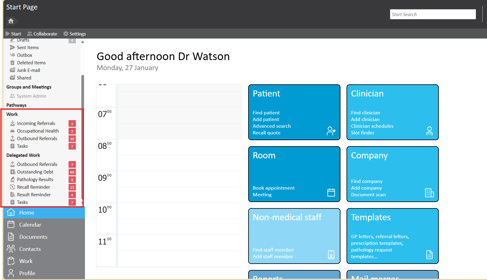
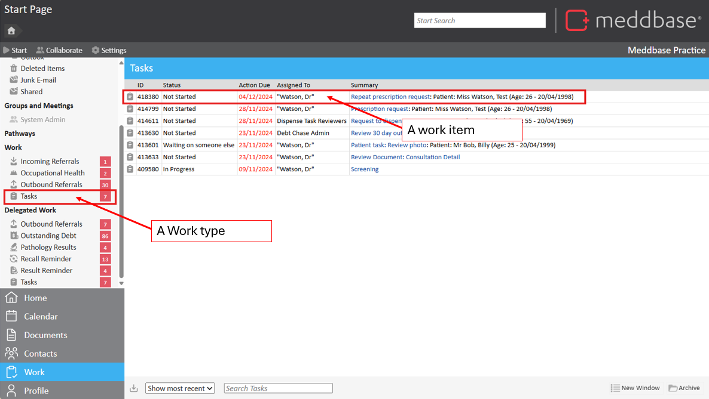

Each work item type in Meddbase—such as Tasks, Recalls, Pathology Results, Debt Reminders, and PACS—has its own set of rules and structures that govern how it operates. These rules define the processes and workflows associated with each work item.
This article provides an overview of the default work items in Meddbase, including Tasks, Recalls, Pathology Results, Debt Reminders, and PACS. It directs users to the relevant articles for detailed guidance on how to configure each work item according to their needs.
Work Types:
Each work type has different configuration options. For details regarding the configuration of these work items, see the relevant article.
Each of these work types will have a corresponding inbox available on the left hand side of the Start page, where they will be split into Work or Delegated work.

A work item is an individual instance of a work type. Each work item represents a specific piece of work within the system, following the structure and rules of its associated work type.
For example, if "Pathology Result" is a work type, then each individual pathology result generated would be a separate work item within that category.
Work items are what you interact with to complete actions.
